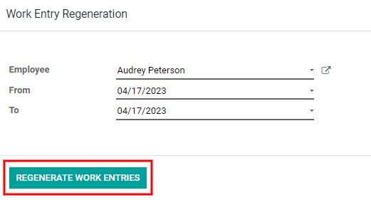
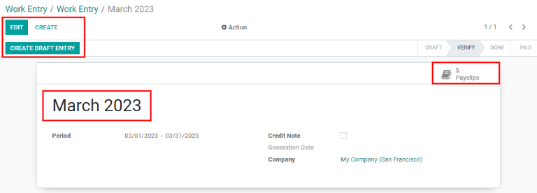

Entradas de trabajo¶
En menuselection:Nómina --> Entradas de trabajo --> Entradas de trabajo, podrá obtener una visión general de las hojas de tiempo individuales de cada empleado, con cada día dividido en un turno de mañana y un turno de tarde.
Si desea cambiar de vista para solo obtener las entradas de un día, semana o mes específico haga clic en uno de los enlaces de día, semana o mes, ubicado en la parte superior del tablero.
Utilice los iconos ⬅️ (flecha izquierda) y ➡️ (flecha derecha) ubicados en la izquierda y derecha del botón Hoy para ajustar las fechas mostradas. Las flechas ajustarán la fecha según el tipo de hora seleccionada. Por ejemplo, si selecciona mostrar por mes, las flechas se moverán un mes con cada clic. Si selecciona semana o día, la hora se moverá una semana o un día por cada clic.
Agregar una nueva entrada de trabajo¶
Si hace falta una entrada necesaria de trabajo, por ejemplo, baja por enfermedad o tiempo personal, haga clic en Añadir para crear una nueva entrada de trabajo. Aparecerá una ventana emergente con varios campos para completar.
Establezca el nombre de entrada de trabajo, por ejemplo tiempo personal por enfermedad o cualquier otra descripción corta. Seleccione el empleado y el tipo de entrada de trabajo de las respectivas listas desplegables.

Lo siguiente es introducir la fecha y hora de la entrada de trabajo en los desplegables de y hasta. Primero seleccione la fecha desplazándose hasta el mes y el año correctos, utilice los iconos ⬅️ (flecha izquierda) y ➡️ (flecha derecha) y haga clic en el día específico.
A continuación, seleccione el tiempo con la ayuda de los iconos ⏰ (reloj), ⬆️ (flecha hacia arriba) y ⬇️ (flecha hacia abajo). Seleccione la hora, minuto y segundo para cada sección.
El Periodo mostrará las horas según las entradas de y hasta.
Truco
Antes de hacer clic en guardar y cerrar o guardar y nuevo, compruebe el periodo para asegurarse de que la hora indicada se corresponde con los campos de y hasta.
Una vez introducida la información, haga clic en guardar y cerrar para guardar la entrada y cerrar la ventana emergente, o en guardar y nuevo para guardar la entrada y crear otro tipo de entrada de trabajo.
Volver a generar entradas de trabajo¶
Después de añadir o modificar una entrada de trabajo, debe regenerar las entradas de trabajo para los empleados afectados. Haga clic en el botón regenerar entradas de trabajo en la parte superior del tablero principal y aparecerá una ventana emergente.
Seleccione el empleado para el que deseé regenerar las entradas de trabajo desde el menú desplegable y ajuste los campos de y hasta para observar el rango de fecha correcto. Haga clic en regenerar las entradas de trabajo para recrear las entradas de trabajo. Una vez terminado se cerrará la ventana emergente.
Conflictos¶
Aparece un conflicto en cada solicitud no aprobada o si hay algún tipo de error en la entrada de trabajo, por ejemplo, campos necesarios vacíos. Debe resolver los conflictos antes de que genere los recibos de nómina.
Cada entrada de trabajo con conflicto a resolver se indica en la vista general del tablero entrada de trabajo, para llegar ahí vaya a .
Los conflictos se señalan con una esquina naranja en la parte superior izquierda de cada entrada. Haga clic en cualquier entrada de trabajo para ver los detalles del conflicto.
El conflicto se explica en una caja de texto naranja.

Puede ver el nombre de la entrada de trabajo, empleado, y tipo de entrada de trabajo en la parte izquierda de la ventana emergente. En el lado derecho podrá ver el rango de y hasta, así como el tiempo total solicitado (en horas).
Si el conflicto se debe a que ya existe una solicitud de tiempo personal por ese mismo tiempo en el sistema, el tiempo personal se registrará en el campo guilabel:Tiempo personal. Si hace clic en el botón enlace externo a lado de la entrada Tiempo personal, podrá ver la solicitud duplicada del tiempo personal.
Podrá ver los detalles del tiempo personal en la ventana emergente. Puede editar la solicitud si es necesario. Haga clic en el botón validar o rechazar para aprobar o rechazar la solicitud, después haga clic en el botón guardar

Una vez que se haya aprobado o guardado la solicitud duplicada de tiempo personal, la pantalla regresará al conflicto. Haga clic en rechazar tiempo personal o aprobar tiempo personal, los botones se encuentran en la parte superior derecha. Repita el proceso para todos los conflictos hasta que no queden más.
Una vez que haya resuelto todos los conflictos debe regenerar las entradas de trabajo para cada empleado con el botón regenerar entradas de trabajo y después completar la información correspondiente de cada empleado.

Generar recibos de nómina¶
Para generar recibos de nómina, vaya al periodo de tiempo para el que desea generarlos, ya sea por día, semana o mes. Cuando aparezca el período de pago que necesita, haga clic en el botón Generar recibos de nómina.

Truco
Si el botón Generar recibos de nómina no está activo (aparece en color turquesa claro en lugar de turquesa oscuro), hay conflictos. Si pasa el ratón sobre Generar recibos de nómina aparecerá una advertencia que dice: Resolver conflictos primero. Resuelva todos los conflictos antes de generar los recibos de nómina.
Aparecerá una entrada por lote para el periodo de tiempo seleccionado. El nombre del lote aparecerá en la parte superior en el campo nombre, que suele incluir el mes y el año del lote en cuestión.
El intervalo de fechas al que se aplican las nóminas aparece en el campo Periodo. La empresa aparece en el campo Empresa, junto con una opción para marcar los recibos de nómina como nota de crédito. Para realizar cambios, haga clic en el botón Editar de la parte superior izquierda, realice los cambios necesarios y haga clic en guardar para aceptar los cambios o en Descartar para reestablecer los datos originales.
Haga clic en el botón crear borrador de entrada para crear los recibos de nóminas del lote.
Haga clic en el botón Recibos de nómina de la parte superior derecha para ver todos los recibos de nóminas del lote.
Nota
Los recibos de nómina tendrán el estado En espera hasta que se haga clic en el botón Crear un asiento en estado de borrador. Después de esto, el estado del recibo de nómina será Hecho.
Para imprimir un recibo de nómina haga clic en la caja a un lado de cada recibo. Si quiere imprimir todas haga clic en la caja junto a Referencia para seleccionar todos los recibos al mismo tiempo. Haga clic en el botón Imprimir y se creará un archivo PDF con todos los recibos que seleccionó.

Ver también